Solution design: an AI disruption advisor for the Operations Control Centre (OCC) and the Passenger Control Unit (PCU). It turns a flight disruption into an explained, approved recovery plan before the impact spreads across the network.
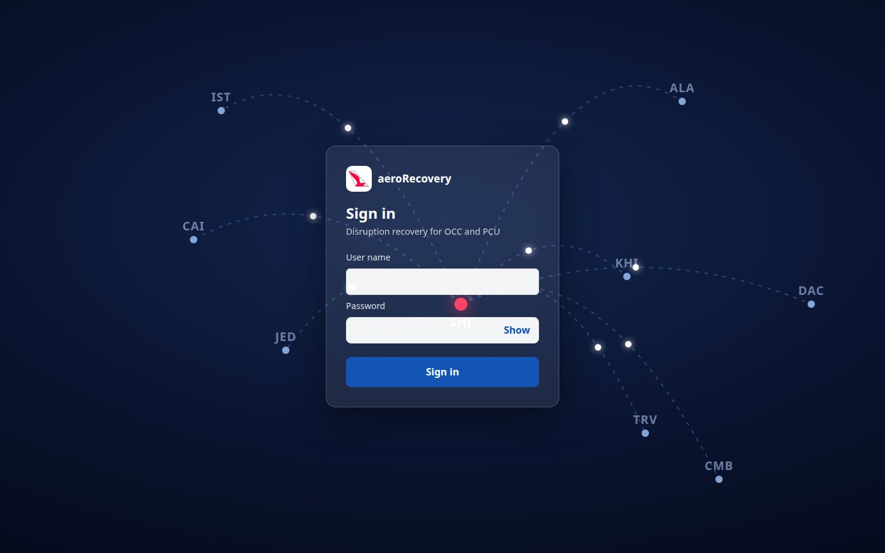
When a flight is delayed or cancelled, the impact does not stay with that flight. The same aircraft flies the next legs of its rotation, so the delay moves along the day; connecting passengers miss onward flights; crews run into their maximum duty time; and seats on the next flights are limited. OCC and PCU have to decide within minutes, usually by combining several systems and spreadsheets by hand.
aeroRecovery is one web application for both teams. It reads the airline's own extracts, predicts delay risk, simulates the effect of a delay or cancellation, ranks recovery options and passengers with reasons, and produces a rebooking and reward plan that a person approves.
| Step | What the system does |
|---|---|
| 1. Predict | Delay risk for every flight in the next 7 days (LightGBM, one model per delay threshold) with the main reasons; expected missed connections; a live forecast when the inbound aircraft's delay is known. |
| 2. Assess | For a chosen flight and delay: the knock-on along the aircraft rotation, affected flights, missed connections, crew duty (FDP) headroom. |
| 3. Compare | Recovery options side by side (absorb, aircraft swap, round-trip cancellation, hold a connection) by delay, passengers, EU261 and cost; three strategies (lowest cost, protect passengers, least delay). |
| 4. Protect | Passengers ranked by strict tiers (care, urgency, others) and weights; seat-limited rebooking solved optimally (OR-Tools CP-SAT); care entitlements; goodwill rewards within a budget. |
| 5. Decide | A person approves or overrides (an override needs a reason); an AI agent can investigate a flight and recommend, never decide. |
Figures are read from the live build (model card, 21 Nov 2026): time-ordered test on the last 28 days of history (5,956 flights) that the models never saw.
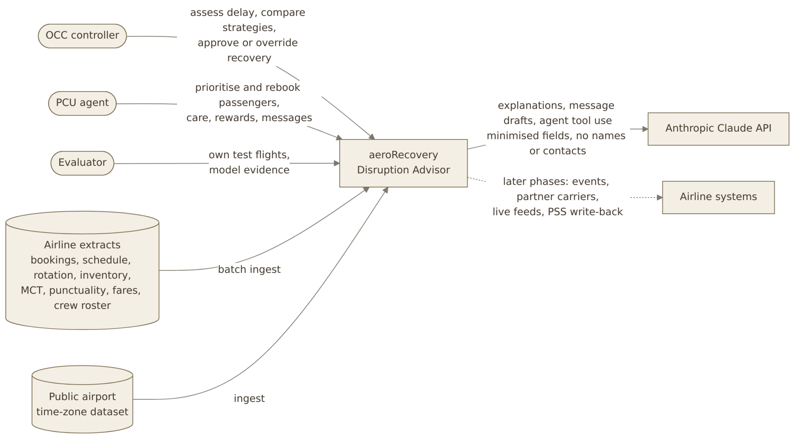
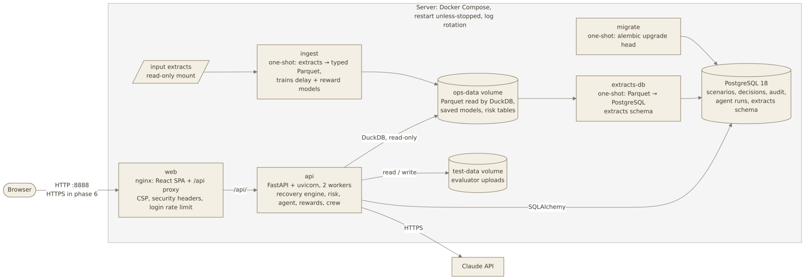
| Layer | Technology | Why |
|---|---|---|
| Web | React, TypeScript, Vite | One responsive app for both teams; role-based views. |
| API and engine | Python, FastAPI | Recovery engine, priority rules, rebooking, models and agent in one service. |
| Analytics store | Parquet + DuckDB | 27.9 million booking rows queried in seconds without a database load. |
| Records | PostgreSQL | Scenarios, approvals and agent runs with an audit trail. |
| Optimisation | OR-Tools CP-SAT | Proven optimal seat assignment that keeps groups together. |
| Machine learning | LightGBM, Optuna | Delay, arrival and reward models; tuned on time-ordered validation. |
| Generative AI | Claude (claude-opus-5-5) | Plain-language explanations, passenger messages, a tool-using agent; never decides. |
| Deployment | Docker Compose on Oracle Cloud | Health checks, automatic restart, rollback image tags and database dumps. |
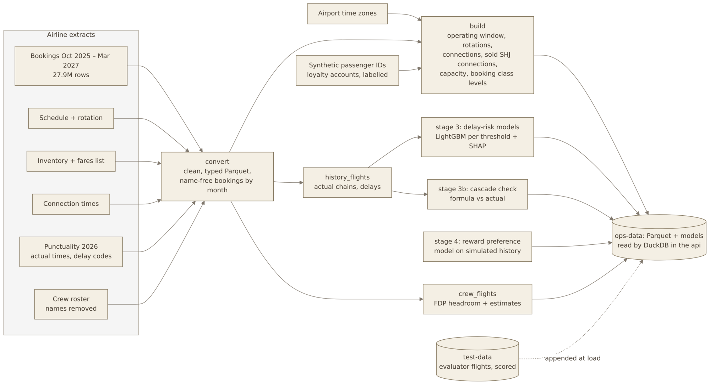
| Data in the build | 2,614 | flights in the operating picture (19–30 Nov 2026) |
|---|---|---|
| 63,322 | past flights with actual times (punctuality history, Jan–Nov 2026) | |
| 299,417 | passenger flight segments; 174,723 customers (no names kept) | |
| 35,021 | crew duties from the roster (1 Oct – 20 Nov 2026); no crew names or IDs kept |
| Component | Method | Result (held-out test) |
|---|---|---|
| Delay risk, 7 days ahead | LightGBM per threshold (5–180 min), recency-weighted, tuned with Optuna; reasons from SHAP | AUC 0.768 at 60+ min vs 0.677 for the route × hour baseline; top 10% of flights are 3.3× more often late |
| Live delay (on the day) | Same method plus the inbound aircraft's actual delay | AUC 0.901 at 60+ min; mean error 13 min (planning 20 min) |
| Arrival delay and missed connections | Arrival model combined with the onward departure model | Arrival AUC 0.762 at 60+ min; 88,434 connections scored |
| Reward preference synthetic | LightGBM acceptance model on simulated redemption history | AUC 0.702 vs 0.617 baseline; recovers the assumed behaviour only, not real customer choices |
| Cascade (knock-on) rule | next departure = max(scheduled, previous arrival + 40 min) | 1,656 aircraft pairs last month: 75% within ±15 min of the real departure |
| Crew duty (FDP) | Roster headroom vs the delay of each recovery option | Median headroom 275 min; flags breach or tight for each option (alert only) |
| Passenger priority | Strict tiers (care, urgency, others), weighted score inside a tier | Commercial value never moves a passenger across a tier |
| Rebooking | OR-Tools CP-SAT integer programme | Proven optimal plans in under a second; groups kept together |
Validation is always time-ordered (train on the past, test on the last 28 days), never random, so no future information leaks into training.
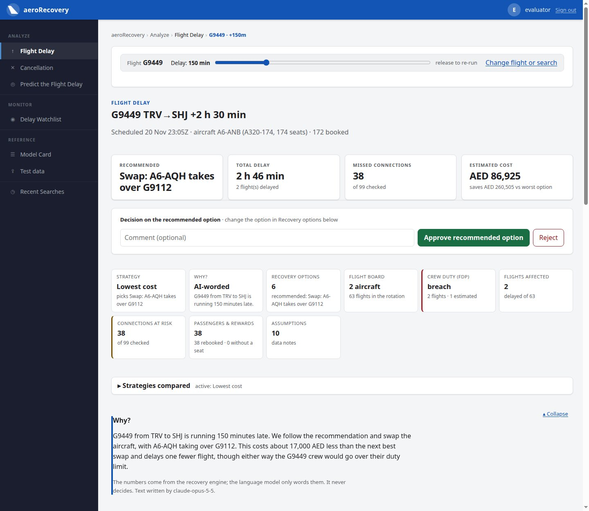
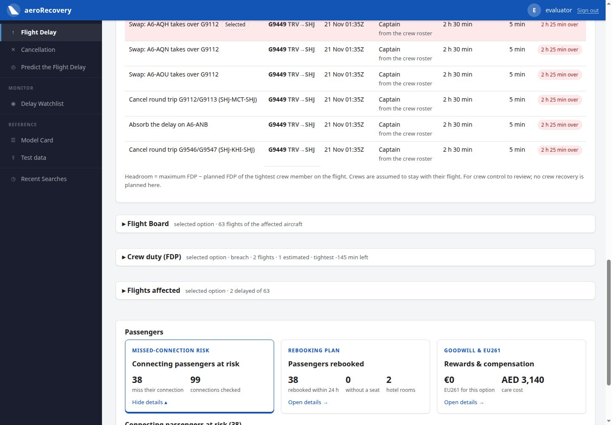
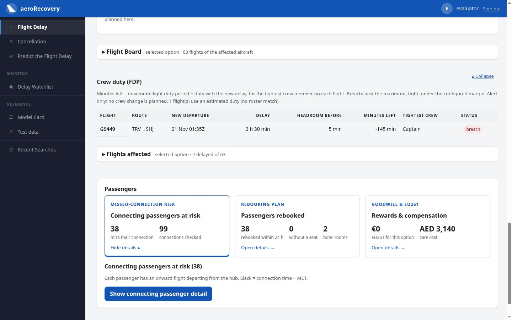
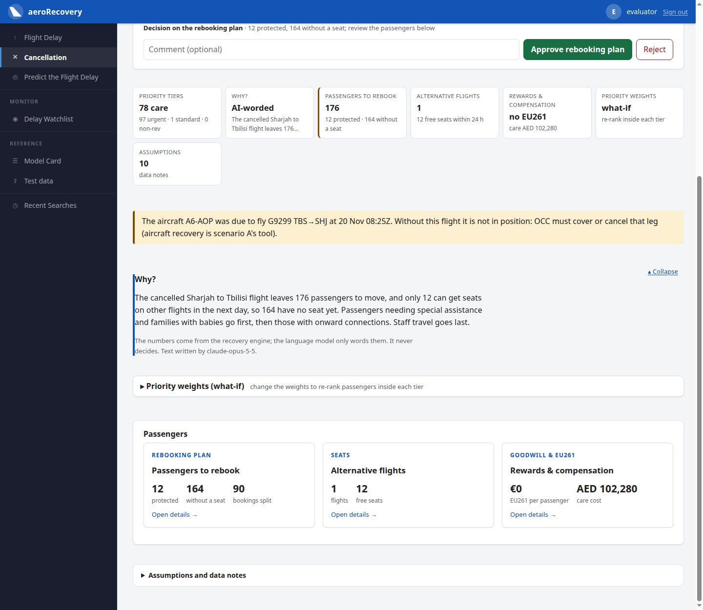
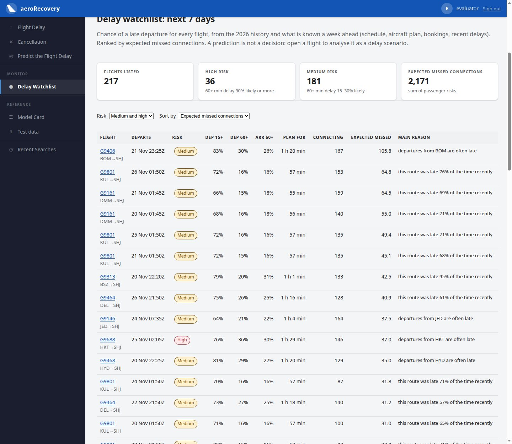
An Evaluator role sees two extra views (the server refuses them to OCC and PCU accounts):
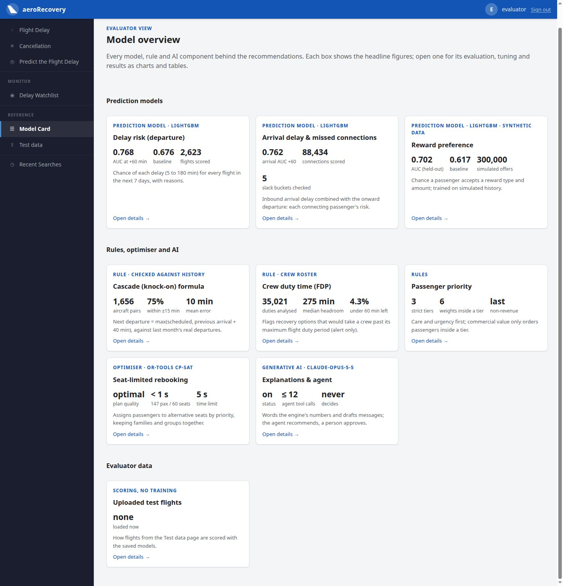
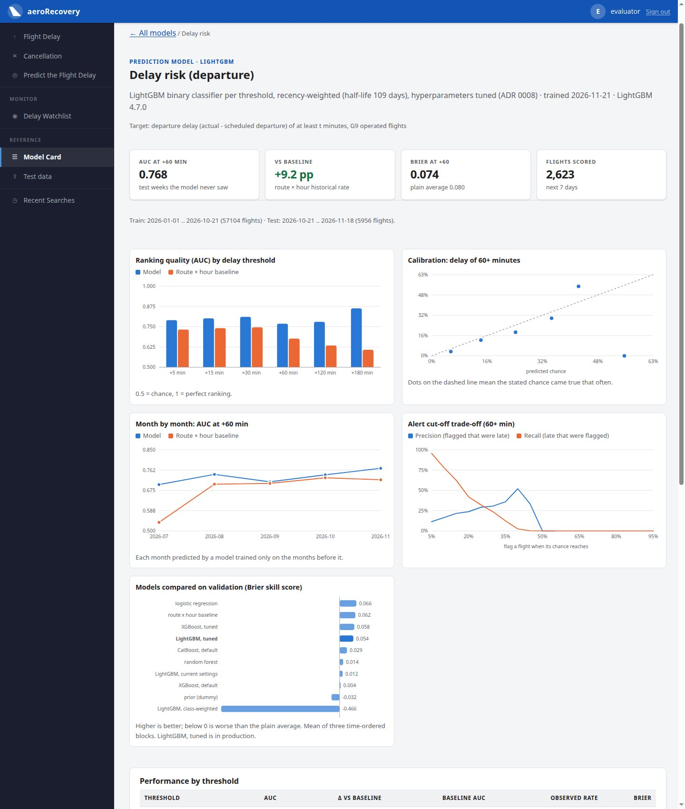
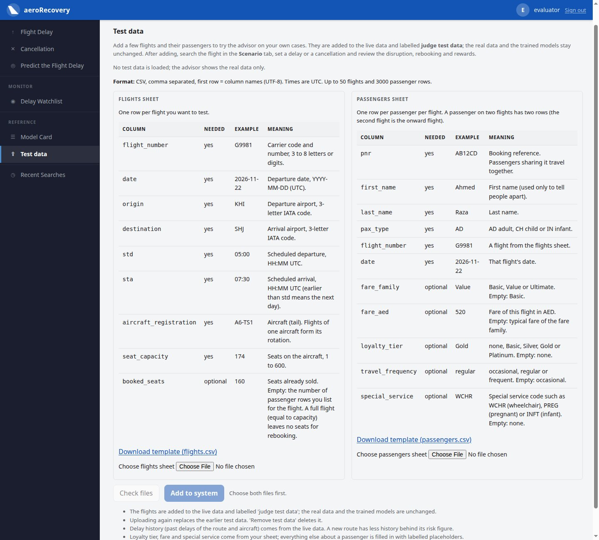
| Check | Result |
|---|---|
| Browser tests (Playwright) on the live server | 11/11 passed sign-in, delay and approval, cancellation, watchlist, strategies, agent, cascade, rewards, roles, evaluator upload, bad-file rejection |
| Frontend unit tests | 46 passed (1 skipped while advanced search is hidden) |
| Backend tests | pytest: engine, models, rebooking, rewards, test-data upload, roles (PostgreSQL test container) |
| Smoke test after each deploy | 11/11 (health, pages, sign-in, scenario) |
| Deployment safety | Server compared with the repository before every deploy; rollback image tag and database dump each time |
| Security and privacy | Role-based access, signed tokens, no passenger names or crew IDs stored, no personal data sent to the AI service |